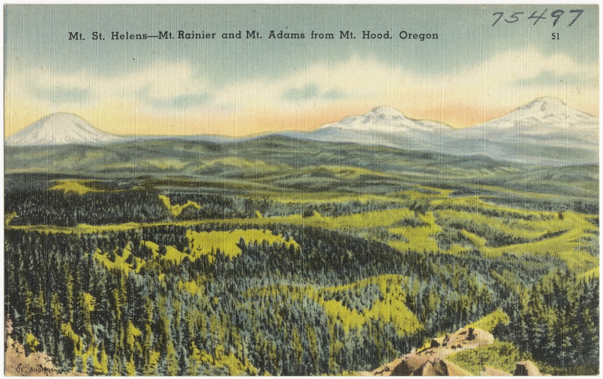

Raster data analysis
Contents
Raster data analysis¶
Raster data represent a matrix of cells (or pixels) organized into rows and columns (or a grid). Grid cells can represent data that changes continuously across a landscape (surface) such as elevation, air temperature, or . reflectance data from satellite imaging platforms. Grid cells can also represent discrete data such as vegetation type or land cover.
{kind=link}
We recommend three libraries for accessing and analyzing raster data in Python. The first is called rasterio which builds on the popular Geographic Raster Abstraction Library or GDAL. It supports read/write access for over 160 raster formats (e.g. GeoTIFF, NetCDF4) and includes methods for finding dataset information, reprojections, resampling, format conversion, and mosaicking. Once we have imported, resampled the data etc., we can apply fast matrix operations using NumPy. Finally, we may also use xarray which introduces labels in the form of dimensions, coordinates and attributes on top of raw NumPy-like arrays, a bit like Pandas.

Review of raster data¶
Raster data represent a matrix of cells (or pixels) organized into rows and columns (or a grid)

Examples: surface maps¶
Grid cells can represent data that changes continuously across a landscape (surface) such as elevation or air temperature.

Examples: satellite imagery¶
Grid cells can represent from a satellite imagaing platforms such as reflectance.

Examples: classification maps¶
Grid cells can also represent discrete data (e.g. vegetation type or land cover).

In this demo, we will be working with elevation data, also known as a Digital Elevation Model (DEM), of the Cascades Mountain Range that includes Mt. Rainier and Mt. Adams.
The data is formatted as a GeoTIFF and we will open it using rasterio function, open(). This function takes a path string and returns a dataset object.
import rasterio
import numpy as np
src = rasterio.open('data/N46W122.tif')
src
<open DatasetReader name='data/N46W122.tif' mode='r'>
Dataset attributes¶
The dataset object contains a number of attributes which can be explored using the following methods. Remember that a raster band is an array of values representing a single variable in 2D space. All bands of a dataset have the same number of rows and columns.
print(f"Number of bands: {src.count}")
print(f"Width: {src.width}")
print(f"Height: {src.height}")
Number of bands: 1
Width: 3601
Height: 3601
Georeferencing¶
Like vector data, pixels in raster data can be mapped to regions on the Earth’s surface. Like GeoPandas, we can display the coordinate reference system of our data using the crs method.
src.crs
CRS.from_epsg(4326)
Now that we know our data has a WGS84 geographic projection (i.e. longitudes and latitudes), we can display the extent of our dataset using the bounds method.
src.bounds
BoundingBox(left=-122.00013888888888, bottom=45.999861111111116, right=-120.9998611111111, top=47.00013888888889)
Finally, we can display the dataset’s geospatial transform using the transform method. This function displays similar information to bounds but also contains the spatial resolution of the dataset (i.e. the dimensions that each pixel of our dataset represents on the ground). Since our dataset has a WGS84 geographic projection (i.e. EPSG:4326), the units of spatial resolution are in degrees.
src.transform
Affine(0.0002777777777777778, 0.0, -122.00013888888888,
0.0, -0.0002777777777777778, 47.00013888888889)
Reading raster data¶
Now that we have some basic information about our data, we can go ahead and import it using the read() function. Data from a raster band can be accessed by the band’s index number. Note that bands are indexed from 1 due to a GDAL convention.
srtm = src.read(1)
The read() method returns a numpy N-D array.
srtm
array([[ 487, 485, 484, ..., 1729, 1738, 1747],
[ 490, 489, 488, ..., 1718, 1727, 1733],
[ 492, 491, 490, ..., 1704, 1713, 1721],
...,
[ 976, 979, 980, ..., 1111, 1113, 1116],
[ 975, 979, 979, ..., 1111, 1113, 1116],
[ 971, 972, 974, ..., 1112, 1114, 1116]], dtype=int16)
type(srtm)
numpy.ndarray
We can have a look at the data using matplotlib.
import matplotlib.pyplot as plt
# Plot data
fig, ax = plt.subplots(figsize=(8,8))
im = ax.imshow(srtm)
ax.set_title("Mt Rainier and Mt Adams", fontsize=14)
cbar = fig.colorbar(im, orientation='vertical')
cbar.ax.set_ylabel('Elevation', rotation=270, fontsize=14)
cbar.ax.get_yaxis().labelpad = 20
Indexing¶
Many GIS tasks require us to read raster values at given locations. Rasterio dataset objects have an index() method for deriving the array indices corresponding to points in georeferenced space.
Let’s demonstrate with an example… what is the elevation of the summit of Mt Rainier? (-121.760424, 46.852947)
# Define latitude and longitude of summit
rainier_summit = [-121.760424, 46.852947]
# Find row/column in corresponding raster dataset
loc_idx = src.index(rainier_summit[0], rainier_summit[1])
print(f"Grid cell index: {loc_idx}")
Grid cell index: (529, 862)
We can use matrix indexing to find the value of the raster data at that location (see Week 2 demo for reminder).
elevation = srtm[loc_idx]
print(f"The summit of Mt Rainier is at {int(elevation)} m or {int(elevation * 3.281)} feet")
The summit of Mt Rainier is at 4374 m or 14351 feet
fig, ax = plt.subplots(figsize=(8,8))
im = ax.imshow(srtm)
# Plot a point on grid
ax.scatter(loc_idx[1], loc_idx[0], s=50, color='red')
ax.set_title("Mt Rainier and Mt Adams", fontsize=14)
cbar = fig.colorbar(im, orientation='vertical')
cbar.ax.set_ylabel('Elevation', rotation=270, fontsize=14)
cbar.ax.get_yaxis().labelpad = 20

More indexing methods¶
How would we find the index of the lowest elevation in this raster dataset? The NumPy argmin() function returns the indices of the minimum values of an array.
min_idx_value = srtm.argmin()
print(min_idx_value)
6060580
Wait… I thought this dataset has two dimensions… Yes but by default, argmin() returns the index as a flattened (1D) array. Fortunately, converting from 1D back to 2D is simple using np.unravel_index.
low_idx = np.unravel_index(min_idx_value, srtm.shape)
print(low_idx)
(1683, 97)
elevation = srtm[low_idx]
print(f"The lowest elevation is {elevation} m")
The lowest elevation is 262 m
fig, ax = plt.subplots(figsize=(7,7))
im = ax.imshow(srtm)
# Plot a point on grid
ax.scatter(loc_idx[1], loc_idx[0], s=50, color='red')
ax.scatter(low_idx[1], low_idx[0], s=50, color='orange')
ax.set_title("Mt Rainier and Mt Adams", fontsize=14)
cbar = fig.colorbar(im, orientation='vertical')
cbar.ax.set_ylabel('Elevation', rotation=270, fontsize=14)
cbar.ax.get_yaxis().labelpad = 20

Converting between indices and coordinates¶
Since Rasterio knows the spatial reference system of our data, we can convert between indices (i.e. rows/columns) and coordinates (i.e. lats/longs) very conveniently. To find the latitude and longitude of the lowest elevation grid cell we can use the transform module.
transform.xy, for example, takes the dataset transform along with the row and column index and converts them to x and y values in the dataset’s coordinate reference system.
rasterio.transform.xy(src.transform, low_idx[0], low_idx[1])
(-121.97305555555556, 46.5325)
Inversely, transform.rowcol takes the dataset transform along with the x and y values in the coordinate reference system and converts them to a row and column indices.
rasterio.transform.rowcol(src.transform, rainier_summit[0], rainier_summit[1])
(529, 862)
Note
Note that transform.rowcol provides the same output as src.index used earlier.
Reprojecting¶
We could use Rasterio to reproject raster data… but it’s quite tricky!

Instead we recommend using GDAL utilities. We can execute these commands in our jupyter notebook cells using the ! sign.
To reproject our data, we can use gdalwarp. All we need to do is set a target spatial reference using the -t_srs flag followed by a space, the input dataset, and the output dataset. Below we set the target spatial reference to UTM Zone 10N (or EPSG:32610) which is the UTM Zone for the Pacific Northwest.
{kind=link}
!gdalwarp -t_srs EPSG:32610 data/N46W122.tif data/N46W122_utm.tif
Processing data/N46W122.tif [1/1] : 0Using internal nodata values (e.g. -32768) for image data/N46W122.tif.
...10...20...30...40...50...60...70...80...90...100 - done.
If we navigate to our data folder we should see a new file called N46W122_utm.tif. Let’s open this new GeoTIFF and check that is has a new projection.
src = rasterio.open('data/N46W122_utm.tif')
src.crs
CRS.from_epsg(32610)
srtm = src.read(1)
fig, ax = plt.subplots(figsize=(7,7))
im = ax.imshow(srtm)
ax.set_title("Mt Rainier and Mt Adams", fontsize=14)
cbar = fig.colorbar(im, orientation='vertical')
cbar.ax.set_ylabel('Elevation', rotation=270, fontsize=14)
cbar.ax.get_yaxis().labelpad = 20

Why does the data look so strange now? Well, since we reprojected it, our data no longer represents a rectangle/square. Since all arrays have to be rectangles/squares, our reprojection introduced some NoData values at the edges. If we have a look at our array, we see that these NoData values are indicated by the integer -32768 which is the smallest possible value that can be represented by the int16 data type (i.e. -32,768 to 32,767).
srtm
array([[-32768, -32768, -32768, ..., -32768, -32768, -32768],
[-32768, -32768, -32768, ..., -32768, -32768, -32768],
[-32768, -32768, -32768, ..., -32768, -32768, -32768],
...,
[-32768, -32768, -32768, ..., -32768, -32768, -32768],
[-32768, -32768, -32768, ..., -32768, -32768, -32768],
[-32768, -32768, -32768, ..., -32768, -32768, -32768]], dtype=int16)
We can mask these NoData values by using NumPy’s masked array module that makes it easier to deal with arrays that have missing or invalid entries.
srtm_masked = np.ma.masked_array(srtm, mask=(srtm == -32768))
Now when we plot the data, the NoData values are not assigned a color.`
fig, ax = plt.subplots(figsize=(7,7))
im = ax.imshow(srtm_masked)
ax.set_title("Mt Rainier and Mt Adams", fontsize=14)
cbar = fig.colorbar(im, orientation='vertical')
cbar.ax.set_ylabel('Elevation', rotation=270, fontsize=14)
cbar.ax.get_yaxis().labelpad = 20

Resampling¶
GDAL utilites make it straightforward to change the spatial resolution of our raster dataset. To reduce the pixel size of our dataset from around 30 m to 1,000 m can be carried out using gdalwarp. This time, however, we specify the -tr flag, which stands for target resolution, followed by the pixel size we want.
!gdalwarp -tr 1000 -1000 data/N46W122_utm.tif data/N46W122_utm_1000.tif
Creating output file that is 79P x 113L.
Processing data/N46W122_utm.tif [1/1] : 0Using internal nodata values (e.g. -32768) for image data/N46W122_utm.tif.
Copying nodata values from source data/N46W122_utm.tif to destination data/N46W122_utm_1000.tif.
...10...20...30...40...50...60...70...80...90...100 - done.
Now when we open, read, mask, and plot our data, we will see that it looks a lot coarser/pixelated because each grid cell represents 1 km on the ground.
# Open new raster dataset
src = rasterio.open('data/N46W122_utm_1000.tif')
# Read new raster dataset
srtm_1000 = src.read(1)
# Mask data
srtm_1000_masked = np.ma.masked_array(srtm_1000, mask=(srtm_1000 == -32768))
# Plot
fig, ax = plt.subplots(figsize=(8,8))
im = ax.imshow(srtm_1000_masked)
ax.set_title("Mt Rainier and Mt Adams", fontsize=14)
cbar = fig.colorbar(im, orientation='vertical')
cbar.ax.set_ylabel('Elevation', rotation=270, fontsize=14)
cbar.ax.get_yaxis().labelpad = 20